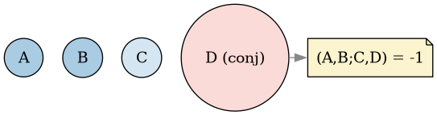
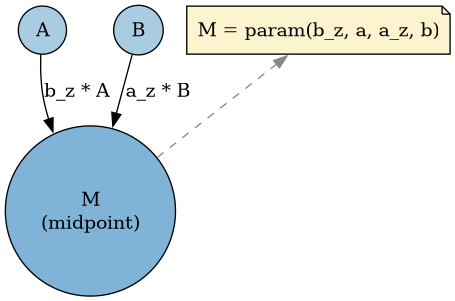
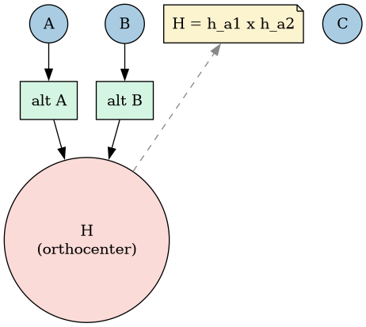
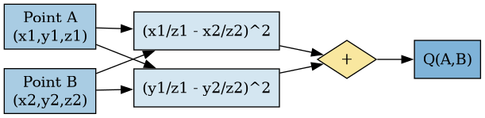
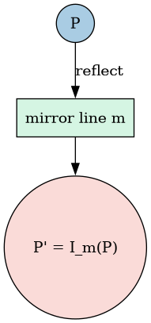
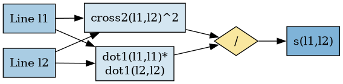

- Generated by
 1.15.0
1.15.0
|
ProjGeom 1.0.13
|
Namespaces | |
| namespace | detail |
Classes | |
| class | Conic |
| A conic section represented by a symmetric 3x3 matrix. More... | |
| struct | Fraction |
| Fraction. More... | |
| class | persp_euclid_plane |
| Perspective-Euclidean plane class. More... | |
| struct | pg_point |
| struct | pg_line |
| Projective line: two dimensional subspace of K^3. More... | |
| struct | pg_object |
| Generic projective geometry object (value-type templated). More... | |
| class | Involution |
| class | involution_generic |
| Generic involution class for projective planes. More... | |
| class | Transform |
| A 3×3 projective transformation matrix. More... | |
Concepts | |
| concept | CayleyKleinPlanePrimitive |
| Cayley-Klein plane Concept. | |
| concept | CayleyKleinPlanePrimitiveDual |
| Cayley-Klein plane Concept (full). | |
| concept | CayleyKleinPlane |
| Cayley-Klein plane Concept. | |
| concept | CayleyKleinPlaneDual |
| Cayley-Klein plane Concept (full). | |
| concept | Sequence |
| Sequence. | |
| concept | Ring |
| Ring concept. | |
| concept | OrderedRing |
| Ordered ring concept. | |
| concept | Integral |
| Integral concept. | |
| concept | ProjectivePlanePrimitive |
| Projective plane Concept. | |
| concept | ProjPlanePrimDual |
| Projective plane Concept (full). | |
| concept | ProjectivePlane |
| Projective plane Concept. | |
| concept | ProjectivePlaneDual |
| Projective plane dual Concept. | |
| concept | ProjectivePlanePrimH |
| Projective plane Concept (half). | |
| concept | ProjectivePlanePrim |
| Projective plane Concept (full). | |
| concept | ProjectivePlanePrim2 |
| Shorthand Notation of ProjectivePlane. | |
| concept | ProjectivePlaneGenericH |
| Projective plane Concept (full). | |
| concept | ProjectivePlaneGeneric |
| Projective plane Concept (full). | |
| concept | ProjectivePlaneGeneric2 |
| Shorthand Notation of ProjectivePlane. | |
| concept | ProjectivePlaneH |
| Projective plane Concept (half). | |
| concept | ProjectivePlane2 |
| Shorthand Notation of ProjectivePlane. | |
| concept | ProjectivePlaneCoordH |
| Projective plane Concept (half). | |
| concept | ProjectivePlaneCoord |
| Projective plane Concept (full). | |
| concept | ProjectivePlaneCoord2 |
| Shorthand Notation of ProjectivePlane. | |
Typedefs | |
| template<typename T> | |
| using | Value_type = typename T::value_type |
| Value type of a type. | |
| template<typename T> | |
| using | Element_type |
| Element type of a sequence. | |
| using | Frac = Fraction<std::int64_t> |
| Canonical rational type ( \(\mathbb{Q}\) over 64-bit integers). | |
| using | Mat3 = std::array<std::array<Frac, 3>, 3> |
| A 3x3 matrix of rational numbers. | |
| using | Vec3 = std::array<Frac, 3> |
| A 3-vector of rational numbers. | |
| template<typename Point> | |
| using | Triple = std::array<Point, 3> |
| Type alias for an array of three points (a triangle). | |
Enumerations | |
| enum class | ConicType { Ellipse , Parabola , Hyperbola } |
| Enumeration of conic types based on the discriminant. More... | |
Functions | |
| template<class Line, class Point = typename Line::Dual> | |
| constexpr auto | is_perpendicular (const Line &l_1, const Line &l_2) -> bool |
| Check if two lines are perpendicular (Cayley-Klein). | |
| template<class Point, class Line> | |
| constexpr auto | altitude (const Point &pt_p, const Line &ln_m) -> Line |
| Compute the altitude from a point to a line (Cayley-Klein). | |
| template<class Point, class Line = typename Point::Dual> | |
| constexpr auto | orthocenter (const std::array< Point, 3 > &triangle) -> Point |
| Compute the orthocenter of a triangle (Cayley-Klein). | |
| template<class Point, class Line> | |
| constexpr auto | tri_altitude (const std::array< Point, 3 > &triangle) -> std::array< Line, 3 > |
| Compute all three altitudes of a triangle (Cayley-Klein). | |
| template<typename Value, class Point, class Line = typename Point::Dual> | |
| constexpr auto | reflect (const Line &mirror, const Point &pt_p) -> Point |
| Reflect a point across a line (Cayley-Klein). | |
| template<ProjectivePlaneCoord2 Line> | |
| constexpr auto | fB (const Line &line_l) -> typename Line::Dual |
| Convert a line to its direction vector in the affine plane. | |
| template<ProjectivePlaneCoord2 Line> | |
| constexpr auto | is_perpendicular (const Line &line_l, const Line &line_m) -> bool |
| Check if two lines are perpendicular. | |
| template<ProjectivePlaneCoord2 Line> | |
| constexpr auto | is_parallel (const Line &line_l, const Line &line_m) -> bool |
| Check if two lines are parallel. | |
| template<typename Point, typename Line> requires ProjectivePlaneCoord<Point, Line> | |
| constexpr auto | altitude (const Point &a, const Line &line_l) -> Line |
| Compute the altitude from a point to a line. | |
| template<ProjectivePlaneCoord2 Point> | |
| constexpr auto | tri_altitude (const Triple< Point > &triangle) |
| Compute all three altitudes of a triangle. | |
| template<ProjectivePlaneCoord2 Point> | |
| constexpr auto | orthocenter (const Triple< Point > &triangle) -> Point |
| Compute the orthocenter of a triangle. | |
| template<ProjectivePlaneCoord2 Line> | |
| constexpr auto | reflect (const Line &line_m) |
| Create an involution that reflects across a line. | |
| template<ProjectivePlaneCoord2 Point> | |
| constexpr auto | midpoint (const Point &a, const Point &b) -> Point |
| Compute the midpoint of two points. | |
| template<ProjectivePlaneCoord2 Point> | |
| constexpr auto | tri_midpoint (const Triple< Point > &triangle) -> Triple< Point > |
| Compute the midpoints of all three sides of a triangle. | |
| template<ProjectivePlaneCoord2 Point> | |
| constexpr auto | uc_point (const Value_type< Point > &lda1, const Value_type< Point > &mu1) |
| Compute a point on the unit circle from trigonometric parameters. | |
| template<OrderedRing _Q> | |
| constexpr auto | archimedes (const _Q &a, const _Q &b, const _Q &c) |
| Archimedes's function. | |
| template<typename _Q> | |
| constexpr auto | cqq (const _Q &a, const _Q &b, const _Q &c, const _Q &d) -> std::array< _Q, 2 > |
| Cyclic quadrilateral quadrea theorem. | |
| template<typename T> | |
| constexpr auto | Ptolemy (const T &quad) -> bool |
| Check Ptolemy's theorem for a cyclic quadrilateral. | |
| template<typename K> requires Integral<K> | |
| constexpr auto | quad1 (const K &x1, const K &z1, const K &x2, const K &z2) |
| Compute squared difference of ratios (integral version). | |
| template<typename K> | |
| constexpr auto | quad1 (const K &x1, const K &z1, const K &x2, const K &z2) |
| Compute squared difference of ratios (non-integral version). | |
| template<ProjectivePlaneCoord2 Point> | |
| constexpr auto | quadrance (const Point &a1, const Point &a2) |
| Compute the quadrance between two points. | |
| template<typename... Args> | |
| constexpr auto | quadrance_copy (const Args &... args) |
| Compute quadrances for multiple pairs of points. | |
| template<ProjectivePlaneCoord2 Line, typename T> | |
| constexpr auto | sbase (const Line &l1, const Line &l2, const T &d) |
| Base function for spread and cross-spread. | |
| template<ProjectivePlaneCoord2 Line> | |
| constexpr auto | spread (const Line &l1, const Line &l2) |
| Compute the spread between two lines. | |
| template<ProjectivePlaneCoord2 Point> | |
| constexpr auto | tri_quadrance (const Triple< Point > &triangle) |
| Compute the quadrances of a triangle's sides. | |
| template<ProjectivePlaneCoord2 Line> | |
| constexpr auto | tri_spread (const Triple< Line > &trilateral) |
| Compute the spreads of a triangle's angles. | |
| template<ProjectivePlaneCoord2 Line> | |
| constexpr auto | cross_s (const Line &l1, const Line &l2) |
| Compute the cross spread between two lines. | |
| template<typename T> | |
| constexpr auto | abs (const T &a) -> T |
| absolute | |
| template<Integral Mn> | |
| constexpr auto | gcd_recur (const Mn &_m, const Mn &_n) -> Mn |
| Greatest common divider. | |
| template<Integral Mn> | |
| constexpr auto | gcd (const Mn &_m, const Mn &_n) -> Mn |
| Greatest common divisor. | |
| template<Integral Mn> | |
| constexpr auto | lcm (const Mn &_m, const Mn &_n) -> Mn |
| Least common multiple. | |
| constexpr auto | rationalize (const std::array< Frac, 3 > &values) -> std::array< std::int64_t, 3 > |
| Convert exact rational homogeneous coordinates to integers. | |
| constexpr auto | det3 (const Mat3 &m) -> Frac |
| Determinant of a 3x3 matrix. | |
| constexpr auto | adjugate3 (const Mat3 &m) -> Mat3 |
| Adjugate (classical adjoint) of a 3x3 matrix. | |
| constexpr auto | inverse3 (const Mat3 &m) -> Mat3 |
| Inverse of a 3x3 matrix (adjugate divided by the determinant). | |
| constexpr auto | matmul3 (const Mat3 &a, const Mat3 &b) -> Mat3 |
| Product of two 3x3 matrices. | |
| constexpr auto | matvec3 (const Mat3 &m, const Vec3 &v) -> Vec3 |
| Product of a 3x3 matrix and a 3-vector. | |
| template<Ring _K> | |
| auto | cross0 (const std::array< _K, 3 > &v_a, const std::array< _K, 3 > &v_b) -> _K |
| 1st term of Cross product (yz-plane projection) | |
| template<Ring _K> | |
| auto | cross1 (const std::array< _K, 3 > &v_a, const std::array< _K, 3 > &v_b) -> _K |
| 2nd term of Cross product (xz-plane projection) | |
| template<Ring _K> | |
| auto | cross2 (const std::array< _K, 3 > &v_a, const std::array< _K, 3 > &v_b) -> _K |
| 3rd term of Cross product (xy-plane projection) | |
| template<typename Point> requires Ring<Value_type<Point>> | |
| auto | cross (const Point &v_a, const Point &v_b) -> std::array< Value_type< Point >, 3 > |
| Cross product in homogeneous 3D coordinates. | |
| template<Ring _K> | |
| auto | dot_c (const std::array< _K, 3 > &v_a, const std::array< _K, 3 > &v_b) -> _K |
| Dot product (full 3-component). | |
| template<Ring _T, Ring _K> | |
| auto | plucker_c (const _T &lambda_val, const std::array< _K, 3 > &v_a, const _T &mu_val, const std::array< _K, 3 > &v_b) -> std::array< _K, 3 > |
| generic Plücker linear combination | |
| template<Ring _K> | |
| auto | dot1 (const std::array< _K, 3 > &v_a, const std::array< _K, 3 > &v_b) -> _K |
| Dot product of the (x,y)-components of two vectors (affine part). | |
| template<Ring _K> | |
| auto | dot2 (const std::array< _K, 3 > &v_a, const std::array< _K, 3 > &v_b) -> _K |
| Dot product of the (0,2)-component of two vectors. | |
| template<typename T> | |
| constexpr auto | sq (const T &a) |
| Square function. | |
| template<typename Value, typename Point> requires Ring<Value> | |
| constexpr auto | parametrize (const Value &lambda_val, const Point &pt_p, const Value &mu_val, const Point &pt_q) -> Point |
| Homogeneous parametrization of point or line (free function). | |
| template<Ring _K> | |
| constexpr auto | meet (const pg_line< _K > &ln_l, const pg_line< _K > &ln_m) -> pg_point< _K > |
| template<class Point, class Line> | |
| auto | check_axiom (const Point &pt_p, const Point &pt_q, const Line &ln_l) -> bool |
| Check Projective plane Axiom. | |
| template<class Point, class Line = typename Point::Dual> | |
| constexpr auto | coincident (const Point &pt_p, const Point &pt_q, const Point &pt_r) -> bool |
| Coincident. | |
| template<class Point, class Line = typename Point::Dual> | |
| constexpr auto | check_pappus (const std::array< Point, 3 > &coline1, const std::array< Point, 3 > &coline2) -> bool |
| Check Pappus Theorem. | |
| template<class Point, class Line = typename Point::Dual> | |
| constexpr auto | tri_dual (const std::array< Point, 3 > &triangle) -> std::array< Line, 3 > |
| Dual of triangle. | |
| template<class Point, class Line = typename Point::Dual> | |
| constexpr auto | persp (const std::array< Point, 3 > &tri1, const std::array< Point, 3 > &tri2) -> bool |
| return whether two triangles are perspective | |
| template<class Point, class Line = typename Point::Dual> | |
| constexpr auto | check_desargue (const std::array< Point, 3 > &tri1, const std::array< Point, 3 > &tri2) -> bool |
| Check Desargue's Theorem. | |
| template<typename Value, class Point, class Line> | |
| auto | check_axiom2 (const Point &pt_p, const Point &pt_q, const Line &ln_l, const Value &a, const Value &b) -> bool |
| Check Axiom 2 for extended projective plane properties. | |
| template<typename Value, class Point, class Line = typename Point::Dual> | |
| constexpr auto | harm_conj (const Point &pt_a, const Point &pt_b, const Point &pt_c) -> Point |
| Harmonic conjugate. | |
| template<typename Value, class Point, class Line> | |
| constexpr auto | involution (const Point &origin, const Line &mirror, const Point &pt_p) -> Point |
| Involution on a point. | |
| template<Ring _K> | |
| constexpr auto | join (const pg_point< _K > &pt_p, const pg_point< _K > &pt_q) -> pg_line< _K > |
| Return the join (product) of two points to form a line. | |
| template<typename Point, typename Line> requires ProjectivePlane<Point, Line> | |
| constexpr auto | incident (const Point &pt_p, const Line &ln_l) -> bool |
| The code snippet is defining a function named incident that checks if a point pt_p is incident to a line ln_l in a projective plane. The function uses the dot method of the Point class and compares it to zero to determine if the point is incident to the line. The function returns a boolean value indicating whether the point is incident to the line or not. | |
| template<typename Line, typename... Args> requires (ProjectivePlanePrim<Line, Args> && ...) | |
| constexpr auto | coincident (const Line &ln_l, const Args &... pt_r) -> bool |
| Coincident. | |
| template<ProjectivePlanePrim2 Point> | |
| constexpr auto | tri_dual (const Triple< Point > &triangle) |
| Compute the dual triangle (sides as points). | |
| template<ProjectivePlanePrim2 Point, typename Fn> | |
| constexpr auto | tri_func (Fn &&func, const Triple< Point > &triangle) |
| Apply a binary function to all pairs of triangle vertices. | |
| template<ProjectivePlanePrim2 Point> | |
| constexpr auto | persp (const Triple< Point > &tri1, const Triple< Point > &tri2) -> bool |
| return whether two triangles are perspective | |
| template<ProjectivePlane2 Point> | |
| constexpr auto | harm_conj (const Point &A, const Point &B, const Point &C) -> Point |
| Compute the harmonic conjugate of three collinear points. | |
| template<ProjectivePlaneGeneric2 _Point> | |
| constexpr auto | harm_conj (const _Point &A, const _Point &B, const _Point &C) -> _Point |
| Compute the harmonic conjugate (generic version). | |
| template<ProjectivePlane2 Point> | |
| constexpr auto | is_harmonic (const Point &A, const Point &B, const Point &C, const Point &D) -> bool |
| Check if four points form a harmonic range. | |
| template<ProjectivePlanePrim2 Point> | |
| void | check_pappus (const Triple< Point > &coline1, const Triple< Point > &coline2) |
| Check Pappus Theorem for two sets of collinear points. | |
| template<ProjectivePlanePrim2 Point> | |
| void | check_desargue (const Triple< Point > &tri1, const Triple< Point > &tri2) |
| Check Desargues' theorem for two triangles. | |
| template<Ring K> | |
| constexpr auto | ratio_ratio (const K &a, const K &b, const K &c, const K &d) |
| Compute the ratio of two ratios. | |
| template<typename Point, typename Line> requires ProjectivePlane<Point, Line> | |
| constexpr auto | x_ratio (const Point &A, const Point &B, const Line &line_l, const Line &line_m) |
| Cross Ratio. | |
| template<ProjectivePlaneCoord2 Point> | |
| constexpr auto | R (const Point &A, const Point &B, const Point &C, const Point &D) |
| Compute the cross ratio of four collinear points. | |
| template<ProjectivePlane2 Point> | |
| constexpr auto | R (const Point &A, const Point &B, const Point &C, const Point &D) |
| Compute the cross ratio using projective construction. | |
| template<ProjectivePlaneCoord2 Point> | |
| constexpr auto | R0 (const Point &A, const Point &B, const Point &C, const Point &D) |
| Compute cross ratio using yz-plane projection. | |
| template<ProjectivePlaneCoord2 Point> | |
| constexpr auto | R1 (const Point &A, const Point &B, const Point &C, const Point &D) |
| Compute cross ratio using xz-plane projection. | |
| constexpr auto | rotate_point (const PgPoint &point, const Frac &angle_cos, const Frac &angle_sin) -> PgPoint |
| Rotate a point around the origin. | |
| constexpr auto | translate_point (const PgPoint &point, std::int64_t tx, std::int64_t ty) -> PgPoint |
| Translate a point by (tx, ty). | |
| constexpr auto | scale_point (const PgPoint &point, const Frac &sx, const Frac &sy) -> PgPoint |
| Scale a point by (sx, sy). | |
| auto | projective_transform (const std::array< PgPoint, 4 > &src, const std::array< PgPoint, 4 > &dst) -> Transform |
| Projective transformation mapping four points to four points. | |
| using fun::Element_type |
Element type of a sequence.
Extracts the element type from a sequence container by examining the type returned by the back() method.
| T | A sequence type supporting back() |
Canonical rational type ( \(\mathbb{Q}\) over 64-bit integers).
| using fun::Triple = std::array<Point, 3> |
Type alias for an array of three points (a triangle).
| Point | The point type |
| using fun::Value_type = typename T::value_type |
Value type of a type.
Extracts the value_type member type from a type if it exists.
| T | A type with a value_type member |
|
strong |
|
constexpr |
absolute
| T |
| [in] | a |
Adjugate (classical adjoint) of a 3x3 matrix.
Satisfies \(m \cdot \operatorname{adj}(m) = \det(m)\,I\), so it is the numerator of the inverse and is well defined even for singular matrices.
| [in] | m | The matrix. |
|
constexpr |
Compute the altitude from a point to a line.
The altitude is the line through the given point that is perpendicular to the given line.
\[ h_a = a \times \bar{l} \]
where \(\bar{l}\) is the direction vector of line \(l\).
| [in] | a | The point from which the altitude is drawn |
| [in] | line_l | The line to which the altitude is drawn |
|
constexpr |
Compute the altitude from a point to a line (Cayley-Klein).
Uses the pole-polar relationship to compute the altitude.
| Point | The point type \[ h = m^\perp \times p \] where \(m^\perp\) is the polar of the line. |
| Point | The point type |
| Line | The line type |
|
constexpr |
Archimedes's function.
\[ \mathrm{archimedes}(a,b,c) = 4ab - (a + b - c)^2 \]
| _Q |
| [in] | a | |
| [in] | b | |
| [in] | c |
|
inline |
Check Projective plane Axiom.
| Point | Point |
| Line | Line |
| [in] | pt_p | |
| [in] | pt_q | |
| [in] | ln_l |
|
inline |
Check Axiom 2 for extended projective plane properties.
| Value | The value/coordinate type |
| Point | The point type |
| Line | The line type (dual of point) |
| [in] | pt_p | First point |
| [in] | pt_q | Second point |
| [in] | ln_l | A line |
| [in] | a | First parameter value |
| [in] | b | Second parameter value |
|
constexpr |
Check Desargue's Theorem.
| Point | Point |
| [in] | tri1 | |
| [in] | tri2 |
| void fun::check_desargue | ( | const Triple< Point > & | tri1, |
| const Triple< Point > & | tri2 ) |
Check Desargues' theorem for two triangles.
Asserts that two triangles are perspective from a point if and only if they are perspective from a line. This is a fundamental theorem in projective geometry.
| [in] | tri1 | First triangle |
| [in] | tri2 | Second triangle |
|
constexpr |
Check Pappus Theorem.
| Point | Point |
| [in] | coline1 | |
| [in] | coline2 |
| void fun::check_pappus | ( | const Triple< Point > & | coline1, |
| const Triple< Point > & | coline2 ) |
Check Pappus Theorem for two sets of collinear points.
Asserts that the three intersection points formed by joining corresponding points from two collinear triples are themselves collinear.
| [in] | coline1 | First triple of collinear points |
| [in] | coline2 | Second triple of collinear points |
|
constexpr |
Coincident.
| Line | Line |
| Args | points |
|
constexpr |
Coincident.
| Point |
| [in] | pt_p | |
| [in] | pt_q | |
| [in] | pt_r |
|
constexpr |
Cyclic quadrilateral quadrea theorem.
Returns the coefficients of the quadratic equation whose roots are the quadrea of a cyclic quadrilateral with opposite sides (a,b) and (c,d).
\[ Q^2 - (4ab + 4cd - (a+b-c-d)^2)\,Q + 16abcd = 0 \]
| _Q |
| [in] | a | |
| [in] | b | |
| [in] | c | |
| [in] | d |
| auto fun::cross | ( | const Point & | v_a, |
| const Point & | v_b )->std::array< Value_type< Point >, 3 > |
Cross product in homogeneous 3D coordinates.
\[ v_a \times v_b = \begin{pmatrix} v_{a,y} v_{b,z} - v_{b,y} v_{a,z} \\ v_{b,x} v_{a,z} - v_{a,x} v_{b,z} \\ v_{a,x} v_{b,y} - v_{b,x} v_{a,y} \end{pmatrix} \]
| _K |
| [in] | v_a | |
| [in] | v_b |
| auto fun::cross0 | ( | const std::array< _K, 3 > & | v_a, |
| const std::array< _K, 3 > & | v_b )->_K |
1st term of Cross product (yz-plane projection)
\[ \mathrm{cross}_0(v,w) = v_y w_z - w_y v_z \]
| _K |
| [in] | v | |
| [in] | w |
| auto fun::cross1 | ( | const std::array< _K, 3 > & | v_a, |
| const std::array< _K, 3 > & | v_b )->_K |
2nd term of Cross product (xz-plane projection)
\[ \mathrm{cross}_1(v_a,v_b) = v_{a,x} v_{b,z} - v_{b,x} v_{a,z} \]
| _K |
| [in] | v_a | |
| [in] | v_b |
| auto fun::cross2 | ( | const std::array< _K, 3 > & | v_a, |
| const std::array< _K, 3 > & | v_b )->_K |
3rd term of Cross product (xy-plane projection)
\[ \mathrm{cross}_2(v_a,v_b) = v_{a,x} v_{b,y} - v_{b,x} v_{a,y} \]
| _K |
| [in] | v_a | |
| [in] | v_b |
|
constexpr |
Compute the cross spread between two lines.
The cross spread is the squared cosine of the angle between lines:
\[\mathrm{cross\_s}(l_1, l_2) = \frac{\mathrm{dot}_1(l_1, l_2)^2} {\mathrm{dot}_1(l_1, l_1) \mathrm{dot}_1(l_2, l_2)} \]
| [in] | l1 | First line |
| [in] | l2 | Second line |
Determinant of a 3x3 matrix.
\[ \det(A) = a(ei-fh) - b(di-fg) + c(dh-eg) \]
| [in] | m | The matrix. |
| auto fun::dot1 | ( | const std::array< _K, 3 > & | v_a, |
| const std::array< _K, 3 > & | v_b )->_K |
Dot product of the (x,y)-components of two vectors (affine part).
\[ \mathrm{dot}_1(v_a,v_b) = v_{a,x} v_{b,x} + v_{a,y} v_{b,y} \]
| _K |
| [in] | v_a | |
| [in] | v_b |
| auto fun::dot2 | ( | const std::array< _K, 3 > & | v_a, |
| const std::array< _K, 3 > & | v_b )->_K |
Dot product of the (0,2)-component of two vectors.
\[ \mathrm{dot}_2(v_a,v_b) = v_{a,x} v_{b,x} + v_{a,z} v_{b,z} \]
| _K |
| [in] | v_a | |
| [in] | v_b |
| auto fun::dot_c | ( | const std::array< _K, 3 > & | v_a, |
| const std::array< _K, 3 > & | v_b )->_K |
Dot product (full 3-component).
\[ v_a \cdot v_b = v_{a,x} v_{b,x} + v_{a,y} v_{b,y} + v_{a,z} v_{b,z} \]
| _K |
| [in] | v_a | |
| [in] | v_b |
|
constexpr |
Convert a line to its direction vector in the affine plane.
Extracts the direction components (first two coordinates) of a line, effectively treating the line as a direction vector in the Euclidean plane.
| [in] | line_l | The line to extract direction from |
|
constexpr |
Greatest common divisor.
\[ \gcd(m,n) = \begin{cases} |n| & \text{if } m = 0 \\ \gcd(|m|, n \bmod |m|) & \text{otherwise} \end{cases} \]
| Mn |
| [in] | _m | |
| [in] | _n |
|
constexpr |
Greatest common divider.
| Mn |
| [in] | _m | |
| [in] | _n |
|
constexpr |
Compute the harmonic conjugate (generic version).
Given three collinear points A, B, C, returns the fourth point D such that (A, B; C, D) is a harmonic range. Generic version using auxiliary constructions.
\[ D = (Q \times S) \times AB \]
where \(P = AB^\perp\), \(R = P^\perp(C)\), \(S = (A \times R) \times (B \times P)\), \(Q = (B \times R) \times (A \times P)\).
| [in] | A | First point |
| [in] | B | Second point |
| [in] | C | Third point (must be collinear with A and B) |
|
constexpr |
Compute the harmonic conjugate of three collinear points.
Given three collinear points A, B, C, returns the fourth point D such that (A, B; C, D) is a harmonic range.
\[ (A, B; C, D) = -1 \quad\Longrightarrow\quad D = \operatorname{parametrize}(B \cdot l_C,\; A,\; A \cdot l_C,\; B) \]

| [in] | A | First point |
| [in] | B | Second point |
| [in] | C | Third point (must be collinear with A and B) |
|
constexpr |
Harmonic conjugate.
\[ (A, B; C, D) = -1 \]
| Value | |
| Point |
| [in] | pt_a | |
| [in] | pt_b | |
| [in] | pt_c |
|
constexpr |
The code snippet is defining a function named incident that checks if a point pt_p is incident to a line ln_l in a projective plane. The function uses the dot method of the Point class and compares it to zero to determine if the point is incident to the line. The function returns a boolean value indicating whether the point is incident to the line or not.
| [in] | pt_p | |
| [in] | ln_l |
Inverse of a 3x3 matrix (adjugate divided by the determinant).
| [in] | m | The matrix. |
| std::domain_error | if the matrix is singular. |
|
constexpr |
Involution on a point.
Applies the involution defined by origin and mirror to point pt_p.
\[ p' = \operatorname{harm\_conj}(o,\; (p \times o) \times m,\; p) \]
| Value | |
| Point | |
| Point::Dual |
| [in] | origin | |
| [in] | mirror | |
| [in] | pt_p |
|
constexpr |
Check if four points form a harmonic range.
Four points A, B, C, D form a harmonic range if the cross ratio (A, B; C, D) equals -1.
| [in] | A | First point |
| [in] | B | Second point |
| [in] | C | Third point |
| [in] | D | Fourth point |
|
constexpr |
Check if two lines are parallel.
Uses the cross product of direction vectors to determine if two lines have the same direction.
| [in] | line_l | First line |
| [in] | line_m | Second line |
|
constexpr |
Check if two lines are perpendicular (Cayley-Klein).
Uses the pole-polar relationship to check perpendicularity.
| Line | The line type |
| Point | The point type (dual of line) |
|
constexpr |
Check if two lines are perpendicular.
Uses the dot product of direction vectors to determine if two lines meet at a right angle.
| [in] | line_l | First line |
| [in] | line_m | Second line |
|
constexpr |
Return the join (product) of two points to form a line.
The join operation in projective geometry computes the line passing through two distinct points.
\[ l = p \times q \]
| [in] | pt_p | First point |
| [in] | pt_q | Second point |
|
constexpr |
Least common multiple.
\[ \operatorname{lcm}(m,n) = \frac{|m|}{|m| \bmod |n|} \cdot |n| \]
| Mn |
| [in] | _m | |
| [in] | _n |
Product of a 3x3 matrix and a 3-vector.
| [in] | m | The matrix. |
| [in] | v | The vector. |
|
constexpr |
Return the meet (intersection) of two lines to form a point. In projective geometry, two distinct lines always intersect at a point.
\[ p = l \times m \]
|
constexpr |
Compute the midpoint of two points.
Returns the point that divides the segment AB in the ratio 1:1.
\[ M = \operatorname{parametrize}(b_z,\; a,\; a_z,\; b) \]

| [in] | a | First point |
| [in] | b | Second point |
|
constexpr |
Compute the orthocenter of a triangle (Cayley-Klein).
Returns the intersection point of the three altitudes.
\[ H = h_{a_1} \times h_{a_2} \]
| [in] | triangle | Array of three non-collinear points |
|
constexpr |
Compute the orthocenter of a triangle.
The orthocenter is the intersection point of all three altitudes of a triangle.
\[ H = h_{a_1} \times h_{a_2} \]

| [in] | triangle | Array of three non-collinear points |
|
constexpr |
Homogeneous parametrization of point or line (free function).
Returns lambda * p + mu * q in homogeneous coordinates. This free function is required by the ProjectivePlaneH concept and is used by Involution and other algorithms in proj_plane.hpp.
| Value | The scalar type (coordinate type) |
| Point | The point or line type |
| [in] | lambda | First scalar coefficient |
| [in] | pt_p | First point/line |
| [in] | mu | Second scalar coefficient \[ \lambda p + \mu q \] |
| [in] | pt_q | Second point/line |
|
constexpr |
return whether two triangles are perspective
| Point | Point |
| [in] | tri1 | |
| [in] | tri2 |
|
constexpr |
return whether two triangles are perspective
| [in] | tri1 | |
| [in] | tri2 |
| auto fun::plucker_c | ( | const _T & | lambda_val, |
| const std::array< _K, 3 > & | v_a, | ||
| const _T & | mu_val, | ||
| const std::array< _K, 3 > & | v_b )->std::array< _K, 3 > |
generic Plücker linear combination
\[ \lambda v_a + \mu v_b \]
| _T | scalar type |
| _K | coordinate type |
| [in] | lambda_val | scalar for v_a |
| [in] | v_a | first vector |
| [in] | mu_val | scalar for v_b |
| [in] | v_b | second vector |
|
inlinenodiscard |
Projective transformation mapping four points to four points.
The correspondences are normalized against their unit point so that the result satisfies \(M p_i \sim q_i\). The computation is exact over the rationals.
| [in] | src | Four source points, no three collinear. |
| [in] | dst | Four destination points, no three collinear. |
| std::domain_error | if either set of points is degenerate. |
|
constexpr |
Check Ptolemy's theorem for a cyclic quadrilateral.
Ptolemy's theorem states that for a cyclic quadrilateral, the product of the diagonals equals the sum of the products of opposite sides.
\[ Q_{12}Q_{34} + Q_{23}Q_{14} = Q_{13}Q_{24} \]
or equivalently \(\mathrm{archimedes}(Q_{12}Q_{34},\; Q_{23}Q_{14},\; Q_{13}Q_{24}) = 0\).
| [in] | quad | Array of six side/diagonal measurements {Q12, Q23, Q34, Q14, Q13, Q24} |
|
constexpr |
Compute squared difference of ratios (non-integral version).
\[ \mathrm{quad}_1 = \left(\frac{x_1}{z_1} - \frac{x_2}{z_2}\right)^2 \]
|
constexpr |
Compute squared difference of ratios (integral version).
\[ \mathrm{quad}_1 = \left(\frac{x_1}{z_1} - \frac{x_2}{z_2}\right)^2 \]
| [in] | x1 | First numerator |
| [in] | z1 | First denominator |
| [in] | x2 | Second numerator |
| [in] | z2 | Second denominator |
|
constexpr |
Compute the quadrance between two points.
The quadrance is the squared distance between two points in the Euclidean plane:
\[ Q(A,B) = \left(\frac{A_x}{A_z} - \frac{B_x}{B_z}\right)^2 + \left(\frac{A_y}{A_z} - \frac{B_y}{B_z}\right)^2 \]

| [in] | a1 | First point |
| [in] | a2 | Second point |
|
constexpr |
Compute quadrances for multiple pairs of points.
Returns a tuple of quadrances for each pair of points.
| [in] | args | Pairs of points |
|
constexpr |
Compute the cross ratio using projective construction.
Returns the cross ratio R(A, B; C, D) using a projective construction that works with arbitrary projective planes.
|
constexpr |
Compute the cross ratio of four collinear points.
Returns the cross ratio \(R(A, B; C, D)\) of four points on a line. Automatically chooses the best coordinate projection based on the points.
In homogeneous coordinates:
\[ R(A,B;C,D) = \frac{\mathrm{cross}_k(A,C)}{\mathrm{cross}_k(A,D)} \Big/ \frac{\mathrm{cross}_k(B,C)}{\mathrm{cross}_k(B,D)} \]
where \(k\) is chosen (0 or 1) to avoid degenerate projections.
| [in] | A | First point |
| [in] | B | Second point |
| [in] | C | Third point |
| [in] | D | Fourth point |
|
constexpr |
Compute cross ratio using yz-plane projection.
Returns the cross ratio R(A, B; C, D) using the yz-plane projection.
\[ R_0(A,B;C,D) = \frac{\mathrm{cross}_0(A,C)}{\mathrm{cross}_0(A,D)} \Big/ \frac{\mathrm{cross}_0(B,C)}{\mathrm{cross}_0(B,D)} \]
| [in] | A | First point |
| [in] | B | Second point |
| [in] | C | Third point |
| [in] | D | Fourth point |
|
constexpr |
Compute cross ratio using xz-plane projection.
Returns the cross ratio R(A, B; C, D) using the xz-plane projection.
\[ R_1(A,B;C,D) = \frac{\mathrm{cross}_1(A,C)}{\mathrm{cross}_1(A,D)} \Big/ \frac{\mathrm{cross}_1(B,C)}{\mathrm{cross}_1(B,D)} \]
| [in] | A | First point |
| [in] | B | Second point |
| [in] | C | Third point |
| [in] | D | Fourth point |
|
constexpr |
Compute the ratio of two ratios.
\[ \frac{a/b}{c/d} = \frac{ad}{bc} \]
| [in] | a | First numerator |
| [in] | b | First denominator |
| [in] | c | Second numerator |
| [in] | d | Second denominator |
|
nodiscardconstexpr |
Convert exact rational homogeneous coordinates to integers.
Homogeneous coordinates are defined only up to a non-zero scale, so a triple of fractions is equivalent to the integer triple obtained by clearing denominators (least common multiple) and dividing through by the greatest common divisor. The sign is normalized so that the first non-zero coordinate is positive. Unlike integer division, this is exact.
| [in] | values | The rational coordinates. |
|
constexpr |
Create an involution that reflects across a line.
Returns an involution that performs reflection across the given line in the Euclidean plane.
\[ I_m(p) = \operatorname{Involution}(m,\; \bar{m}) \]
where \(\bar{m}\) is the direction vector of the mirror line.

| [in] | line_m | The line of reflection (mirror) |
|
constexpr |
Reflect a point across a line (Cayley-Klein).
Uses involution to reflect a point across a mirror line.
\[ p' = \operatorname{involution}(m^\perp,\; m,\; p) \]
where \(m^\perp\) is the pole of the mirror line.
| [in] | mirror | The line of reflection |
| [in] | pt_p | The point to reflect |
|
inlineconstexpr |
Rotate a point around the origin.
| [in] | pt | The point. |
| [in] | cos_a | Cosine of the rotation angle. |
| [in] | sin_a | Sine of the rotation angle. |
|
constexpr |
Base function for spread and cross-spread.
\[ \mathrm{sbase}(l_1, l_2, d) = \frac{d^2}{\mathrm{dot}_1(l_1,l_1)\,\mathrm{dot}_1(l_2,l_2)} \]
| [in] | l1 | First line |
| [in] | l2 | Second line |
| [in] | d | Scalar value (cross or dot product) |
|
inlineconstexpr |
Scale a point by (sx, sy).
| [in] | pt | The point. |
| [in] | sx | X scale factor. |
| [in] | sy | Y scale factor. |
|
constexpr |
Compute the spread between two lines.
The spread is the squared sine of the angle between two lines:
\[ s(l_1, l_2) = \frac{\mathrm{cross}_2(l_1, l_2)^2} {\mathrm{dot}_1(l_1, l_1) \mathrm{dot}_1(l_2, l_2)} \]

| [in] | l1 | First line |
| [in] | l2 | Second line |
|
constexpr |
Square function.
\[ \mathrm{sq}(a) = a^2 \]
| T | data type |
| [in] | a | input value |
|
inlineconstexpr |
Translate a point by (tx, ty).
| [in] | pt | The point. |
| [in] | tx | X translation. |
| [in] | ty | Y translation. |
|
constexpr |
Compute all three altitudes of a triangle (Cayley-Klein).
Returns an array containing the three altitude lines.
\[ \{h_{a_1},\; h_{a_2},\; h_{a_3}\} \]
| [in] | triangle | Array of three non-collinear points |
|
constexpr |
Compute all three altitudes of a triangle.
Returns an array containing the three altitude lines of the triangle.
\[ \{h_{a_1},\; h_{a_2},\; h_{a_3}\} \]
| [in] | triangle | Array of three non-collinear points |
|
constexpr |
Dual of triangle.
\[ \{l_1, l_2, l_3\} = \{a_2 \times a_3,\; a_1 \times a_3,\; a_1 \times a_2\} \]
| Point | Point |
| Line | Line |
| [in] | triangle |
|
constexpr |
Compute the dual triangle (sides as points).
Returns the triangle formed by the three lines joining the vertices of the input triangle.
\[ \{l_1, l_2, l_3\} = \{a_2 \times a_3,\; a_1 \times a_3,\; a_1 \times a_2\} \]
| [in] | triangle | Array of three non-collinear points |
|
constexpr |
Apply a binary function to all pairs of triangle vertices.
Returns an array with the function applied to each pair of distinct vertices of the triangle.
| [in] | func | A binary function to apply |
| [in] | triangle | Array of three points |
|
constexpr |
Compute the midpoints of all three sides of a triangle.
Returns an array containing the midpoints of each side of the triangle.
\[ \{M_{a_1a_2},\; M_{a_2a_3},\; M_{a_1a_3}\} \]
| [in] | triangle | Array of three points |
|
constexpr |
Compute the quadrances of a triangle's sides.
Returns an array with the quadrances of the three sides of the triangle.
| [in] | triangle | Array of three points |
|
constexpr |
Compute the spreads of a triangle's angles.
Returns an array with the spreads of the three angles of the triangle.
| [in] | trilateral | Array of three lines |
|
constexpr |
Compute a point on the unit circle from trigonometric parameters.
Creates a point on the unit circle using the parameterization (lambda^2 - mu^2, 2*lambda*mu, lambda^2 + mu^2).
\[ (\lambda^2 - \mu^2,\; 2\lambda\mu,\; \lambda^2 + \mu^2) \]
| [in] | lda1 | The lambda parameter |
| [in] | mu1 | The mu parameter |
|
constexpr |
Cross Ratio.
The cross ratio of four points with respect to two lines:
\[ R(A,B;l,m) = \frac{A \cdot l}{A \cdot m} \Big/ \frac{B \cdot l}{B \cdot m} \]
| Point | |
| Line |
| [in] | A | point A |
| [in] | B | point B |
| [in] | line_l | line l |
| [in] | line_m | line m |